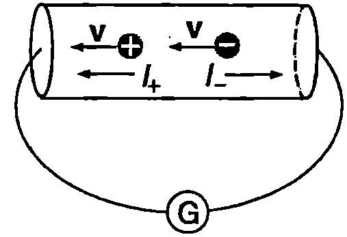
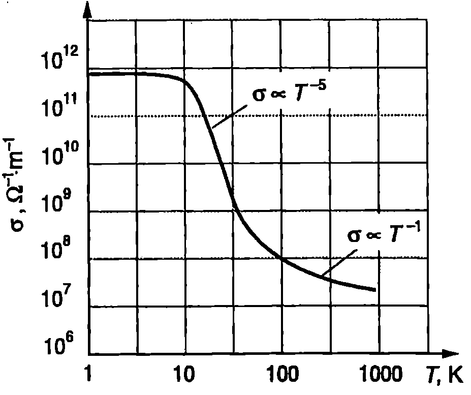
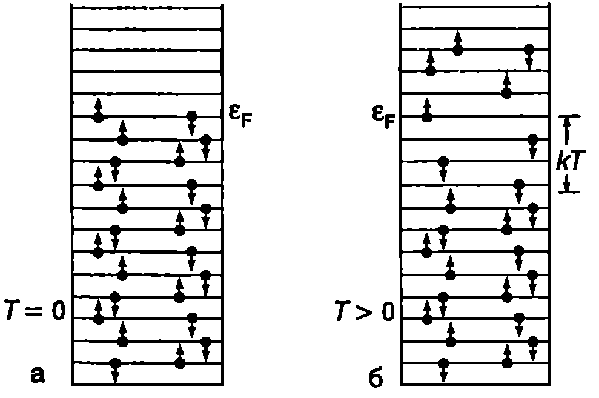
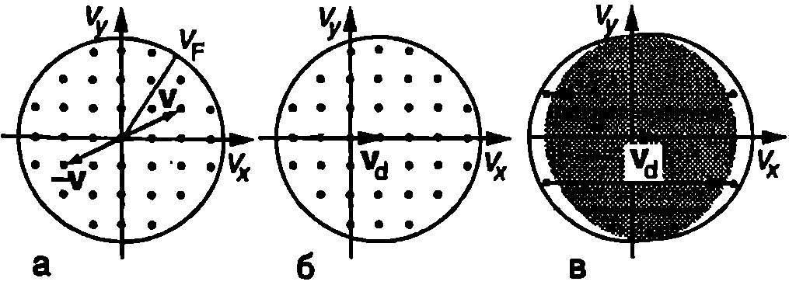
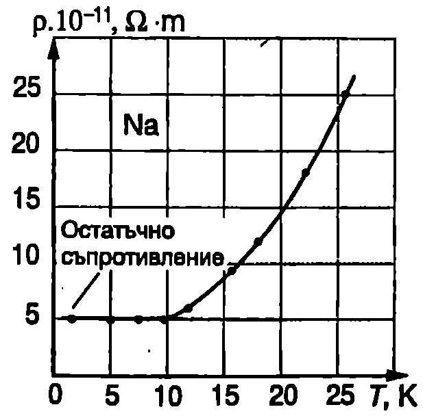

Опит на Толмен
През 1916 г. американският физик Р. Толмен извършва серия от опити, които убедително доказват електронната природа на електричния ток в металите. Идеята на тези опити се основава на свойството инертност. Например незареден метален проводник се движи наляво със скорост $\vec v$ (Фиг. \ref{fig:53.1}). Заедно с проводника се движат и подвижните заряди (токовите носители). Ако проводникът рязко спре, подобно на пътниците в автобус, които след натискане на спирачките политат напред, подвижните заредени частици ще продължат да се движат по инерция наляво и през чувствителния галванометър ще протече ток. По посоката на тока може да се определи знакът на токовите носители: ако посоката на тока $I_+$ съвпада с посоката на движение на частиците по инерция, това означава, че техният заряд е положителен, а при отрицателен заряд на частиците посоката на тока $I_-$ е противоположна (Фиг. \ref{fig:53.1}). Опитите на Толмен показват, че електричният ток в металите се пренася от частици с отрицателен заряд. Освен това Толмен определя отношението $q/m$ на заряда $q$ и масата $m$ на тези частици и установява, че това са електрони.

`Фиг. 53.1`
Класически модел на електропроводимостта на металите
В най-простия класически модел на електронната проводимост на металите свободните електрони се разглеждат като идеален газ със средна кинетична енергия на хаотичното топлинно движение
$$\frac{m_e u^2}{2} = \frac{3}{2}kT
$$
където $m_e$ е масата на електрона, и средната квадратична скорост на топлинно движение на електроните (вж.\ref{sec:32} и\ref{sec:33}), $k$-константа на Болцман, $T$-абсолютна температура на електронния газ.
Приемаме, че всички електрони се движат с еднаква скорост $$u = \sqrt{\frac{3kT}{m_e}} $$ като се разсейват еластично от неподвижните положителни йони, разположени във възлите на кристалната решетка. Средното разстояние $\lambda$, изминато от електрон между два последователни удара, се нарича средна дължина на свободния пробег на електроните, а средното време $$\tau = \frac{\lambda}{u} $$ между ударите се нарича време на релаксация.
Поради хаотичния характер на топлинното движение, в отсъствие на електрично поле през метала не протича ток. Когато в проводника се създаде еднородно електрично поле с интензитет $\vec E$, на електроните действа постоянна сила $-e\vec E$ и те започнат да се движат равноускорително в посока, обратна на посоката на полето. Това насочено движение се наслагва към хаотичното топлинно движение. Ще приемем, че след всеки удар с йоните електроните изцяло губят скоростта си на насочено движение, след което започват да се ускоряват отново. Скоростта на насочено движение в края на свободния пробег определяме от втория принцип на механиката: импулсът на действащата сила $eE\tau$ е равен на изменението на импулса $m_e v_{\max}$ на електрона, т.е. $eE\tau = m_e v_{\max}$, откъдето $$v_{\max}=\frac{eE\tau}{m_e}. $$ Тъй като движението е равноускорително без начална скорост, средната скорост на насочено движение на електроните, т.е. тяхната дрейфова скорост, е равна на половината от максималната скорост (вж. част 1, зад.3 на стр.17): $$v_d = \frac{v_{\max}}{2} = \frac{eE\tau}{2m_e} $$ При по-точни пресмятания, след като се отчете Максуеловото разпределение на електроните по скорости (вж.~\ref{sec:34}), за дрейфовата скорост се получава $$v_d = \frac{eE\tau}{m_e}. $$ Заместваме дрейфовата скорост в равенство \eqref{eq:52.3} и за плътността на тока получаваме $$j = nev_d = \frac{ne^2\tau}{m_e} E = \sigma E, $$ където $$\sigma = \frac{ne^2\tau}{m_e} $$ е специфичната проводимост на метала. Тя може да се изрази и чрез средната дължина на свободен пробег на електроните: $$\sigma = \frac{ne^2\lambda}{m_e u} $$ Нито една от величините от дясната страна на уравнение \eqref{eq:53.9} не зависи от интензитета на електричното поле. Следователно при постоянна температура специфичната проводимост е константа, характерна за дадения метал, т.е. за металите е в сила законът на Ом.
Дрейфова подвижност
Величината дрейфова подвижност на заредените частици се дефинира със съотношението $$\mu = \frac{v_d}{E}. $$ По определение подвижността $\mu$ е равна на големината на дрейфовата скорост $v_d$, която получава частицата под действие на електрично поле с интензитет $E = 1$ V/m Заместваме $v_d$ от уравнение \eqref{eq:53.6} в \eqref{eq:53.10} и за дрейфовата подвижност на свободните електрони в металите получаваме $$\mu = \frac{e\tau}{m_e}. $$ Специфичната проводимост може да се изрази чрез подвижността на токовите носители (електрони): $$\sigma = e n\mu. $$ Температурна зависимост на специфичната проводимост. Недостатъци на класическия модел
Експерименталните изследвания, извършени с различни метали, показват сложна температурна зависимост на електропроводимостта. На Фиг. \ref{fig:53.2} е показана експериментално получената зависимост на специфичната проводимост $\sigma$ на чиста мед от абсолютната температура $T$. При високи температури $\sigma$ е пропорционална на $T^{- 1}$ Зависимостта става по-силна при понижаване на температурата и достига $T^{- 5}$ най-стръмния участък на кривата $\sigma(T)$. При много ниски температури проводимостта престава да зависи от температурата.
Според класическия модел единствената величина в уравнение \eqref{eq:53.9} за специфичната проводимост, която зависи от температурата, е средната топлинна скорост на електроните ($1/u \propto T^{(- 1/2)}$) За да се обясни по-силната зависи мост на специфичната проводимост $\sigma \propto T^{- 1}$ при високи температури, например, трябва да се предположи, че съществува температурна зависимост на дължината на свободния пробег от вида $\lambda \propto T^{(- 1/2)} $. Такова предположение обаче е необосновано, защото в класическата теория $\lambda$ е геометричен параметър от порядъка на 1 nm, който се определя от размерите на йоните и от разстоянието между тях и не би трябвало да зависи от температурата.

Температурна зависимост на специфичната проводимост на медта (Cu).
`Фиг. 53.2`
Останалите особености в зависимостта $\sigma(T)$ остават напълно необясними в рамките на класическата теория. За да се опишат електричните свойства на веществата на микроскопично равнище, трябва да се използват законите на квантовата физика. Ще се спрем накратко на допълненията и корекциите, които квантовата физика внася във вече разгледания класически модел на електропроводимостта на металите.
Енергия на Ферми
Съгласно с молекулнокинетичната теория движението на частиците на идеалния газ при абсолютната нула се прекратява, т.е. тяхната кинетична енергия става равна на нула. Електроните от електронния газ в металите обаче продължават да се движат дори при температура $T = 0$ K Това движение не е топлинно и се обяснява от квантовата механика. За да се опишат свойствата на електронния газ, използват се две основни идеи на квантовата механика:
-
Енергията на електроните от газа, подобно на енергията на електроните в атома, се квантува, т.е. може да има само определен дискретен набор от стойности - казва се, че електроните запълват т. нар. енергетични нива.
-
За електронния газ е в сила принципът на Паули: на едно и също енергетично ниво могат да се намират най-много два електрона с противоположни спинове.
На Фиг. \ref{fig:53.3} схематично са представени енергетичните нива и запълването им с електрони. Условно посоката на спина на електроните е отбелязана със стрелка. При температура $T = 0$ К (Фиг. \ref{fig:53.3}а) електроните се разполагат в най-ниските (по енергия) нива. Най-високото енергетично ниво, запълнено с електрони при абсолютната нула, се нарича ниво на Ферми в чест на италианския физик Енрико Ферми (1905-1954), а кинетичната енергия на електроните от нивото на Ферми енергия на Ферми $\varepsilon_F$. При $T = 0$ К всички нива с енергия $\varepsilon \leq \varepsilon_F$ са заети от електрони, докато нивата с енергия $\varepsilon > \varepsilon_F$ са свободни.

`Фиг. 53.3`
От класическата молекулнокинетична теория следва, че при нагряване на метала до температура $T$ всеки електрон получава (средно) енергия от порядъка на $kT$. В действителност обаче само част от електроните участват в топлинното движение. При ниски температури това са електроните, разположени на нива с енергия в интервала от $\varepsilon_F - kT$ до $\varepsilon_F$ Само тези електрони могат да получат енергия $kT$ и да преминат в някое от незаетите състояния над нивото на Ферми (Фиг. \ref{fig:53.3}б). Електроните с по-малка енергия $\varepsilon$ не могат да бъдат топлинно активирани, защото за тях състоянията с енергия $\varepsilon + kT$ са заети от други електрони и преминаването в тях е забранено от принципа на Паули.
За температури, при които е изпълнено условието $kT \ll \varepsilon_F$ се казва, че електронният газ е изроден. Тогава най-силно се проявяват квантовите му свойства. Едва при температури, по-високи от температурата на Ферми $T_F$ дефинирана чрез равенството $$kT_F = \varepsilon_F $$ всички електрони участват в топлинното движение. При тези температури свойствата на електронния газ вече не се различават от свойствата на класическия идеален газ - казва се, че газът е неизроден.
Данни за енергията и температурата на Ферми за някои метали са дадени в табл. 53.1.
\begin{table}[t]
\centering
\begin{tabular}{| l|l |l|l|l|}
\hline
Метал & $n,\mathrm{cm^{-3}}$& $\varepsilon_F,\mathrm{eV}$&$v_F,\mathrm{m/s}$&$T_F,\mathrm{K}$\ \hline
Литий & $4,!7.10^{22}$& 4,7&$1,!3.10^6$&55000\ \hline
Натрий& $2,!6.10^{22}$& 3,2&$1,!1.10^6$& 37000\ \hline
Мед& $8,!5.10^{22}$& 7,0&$1,!6.10^6$&81000\ \hline
Злато& $5,!9.10^{22}$& 5,5&$1,!4.10^6$&64000\\hline
\end{tabular}
\captionof{table}[53.1]{
\label{table:53.1}
Концентрация на електроните $n$, енергия на Ферми $\mathcal E_F$, скорост на Ферми $v_F$ И температура на Ферми $T_F$ за някои метали.}
\end{table}
Правят впечатление много високите стойности на температурата на Ферми. При такива температури нито един метал не може да се намира в твърдо агрегатно състояние. Следователно при всички температури, които представляват практически интерес, електронният газ в металите е изроден.
Квантов модел на електропроводимостта на металите
В квантовата теория специфичната проводимост на металите се описва с уравнение, което в аналогично на уравнение \eqref{eq:53.9}, но някои от влизащите в него величини имат по-различен смисъл,
За изроден електронен газ практически всички състояния с енергия $\varepsilon < \varepsilon_F$ ca запълнени с електрони. Ще представим скоростите и на електроните с точки с декартови координати $v_x, v_y$ и $v_z$. Големината на скоростта е свързана с кинетичната енергия на електрона чрез известното съотношение $$v^2 = v_x^2 + v_y^2 + v_z^2 = \frac{2\varepsilon}{m_e}, $$ където $\varepsilon$ е кинетичната енергия на електрона. Тъй като енергията е се квантува, от уравнение \eqref{eq:53.14} следва, че големината на скоростта $v$ също се квантува. На Фиг. \ref{fig:53.4}а с точки са показани разрешените стойности на скоростта, които запълват сфера, наречена сфера на Ферми. Сферата на Ферми е с начало в точката $v = 0$ и има радиус $\displaystyle v_F = \sqrt{\frac{2\varepsilon_F}{m_e}}$. Това е скоростта на на електроните от нивото на Ферми нарича се скорост на Ферми $v_F$. В отсъствие на електрично поле на всеки електрон със скорост $\vec v$ съответства втори електрон с равна по големина и противоположна по посока скорост $-\vec v$ (Фиг. \ref{fig:53.4}а) и електричен ток не протича.
В електрично поле всеки електрон получава допълнителна скорост $\vec v_d$, насочена в противоположна посока на интензитета $\vec E$ на полето, и центърът на сферата на Ферми се отмества, както е показано на Фиг. \ref{fig:53.4}б. При разсейване, което в класическия модел разглеждахме като удар в неподвижен йон от кристала, електроните губят изцяло скоростта $\vec v_d$ на насочено движение, след това отново се ускоряват и т.н. Процесът на ускоряване и разсейване може да се разгледа и по друг начин, като се отчете, че електроните са неразличими частици. Това означава, че те нямат индивидуални характеристики, които да ги различават един от друг, т.е. ако два електрона си разменят местата (енергията), състоянието на системата не се променя. На Фиг. \ref{fig:53.4}в са показани едновременно двете положения на сферата на Ферми със и без електрично поле. Тъй като електроните са неразличими, няма значение кои точно електрони се намират в припокриващите се (защриховани) части от двете сфери. Затова можем да смятаме, че там през цялото време се намират едни и същи електрони, които не изменят състоянието си под действие на полето, т.е. нито се ускоряват, нито се разсейват. Само електроните, намиращи се в много тънък слой със скорости, близки до скоростта на Ферми $v_F$ ($v_F\gg v_d$), променят състоянието си: тези от дясната ивица след разсейване преминават в незапълнената с електрони лява част, отново се ускоряват и се връщат в дясната част и т.н.
И така, електропроводимостта на металите се определя не от всички свободни електрони, а само от тези, които са разположени много близко до нивото на Ферми и имат скорост, приблизително равна на скоростта на Ферми. Затова във формула \eqref{eq:53.9} за специфичната проводимост средната скорост $u$ на топлинно движение се заменя със скоростта на Ферми $v_F$ (тя е около 10 пъти по-голяма от средната топлинна скорост $u$ при стайна температура — вж. табл.53.1), а $\lambda$ — с дължината на свободния пробег на електроните от нивото на Ферми $\lambda_F$. Специфичната проводимост на метала е

`Фиг. 53.4`
$$\sigma = \frac{ne^2\lambda_F}{m_e v_F} $$ Механизми на разсейване
В уравнение \eqref{eq:53.15} влиза скоростта на Ферми $v_F$, която, за разлика от средната скорост на топлинно движение $u$, не зависи от температурата. Единствената зависеща от температурата величина може да е дължината на свободния пробега $\lambda_F$ В класическата теория $\lambda$ е геометричен параметър от порядъка на разстоянието между съседните йони (около 1 nm). Пресмятанията на свободния пробег по формула \eqref{eq:53.15} с експерименталните стойности за $\sigma$ и $v_F$ обаче дават съвсем друг резултат: свободният пробег е много по-голям десетки nm при стайна температура, а за някои особено чисти метали надхвърля 10 cm при температурата на течния хелий (4,2 К). Следователно очакваните от класическата теория еластични удари на електроните в неподвижните йони не се наблюдават.
Взаимодействието на свободните електрони с йоните се извършва чрез електрични сили. То може да се отчете, ако се разгледа движението на електроните в електростатичното поле, създадено от всички йони. Когато йоните са неподвижни във възлите на кристалната решетка, интензитетът на електричното им поле се изменя в пространството по периодичен закон: рязко нараства в близост до йоните и намалява при отдалечаване от тях. Такова поле се нарича периодично кристално поле. Квантовомеханичният анализ показва, че свободните електрони се движат в периодичното кристално поле без да променят посоката си, т.е. без да се разсейват. Разсейване на електроните предизвикват само нарушения в периодичността на полето, свързани с наличието на примеси и дефекти. Трептенията на кристалната решетка също водят до нарушаване на периодичността и разсейване на електроните.
При разсейване от дефекти и примеси дължината на свободния пробег $\lambda_\text{деф}$ обикновено не зависи от температурата, докато свободният пробег $\lambda_\text{реш}$ при разсейване от трептения на кристалната решетка намалява при нагряване. Когато двата механизма действат едновременно и независимо, общата дължина на свободния пробег $\lambda$ се определя по формулата $$1/\lambda = 1/\lambda_\text{деф}+1/\lambda_\text{реш}. $$ Аналогично за специфичното съпротивление ($\rho\propto1/\sigma\propto1/\lambda$) се получава $$\rho = \rho_\text{деф}+\rho_\text{реш}. $$ Следователно специфичното съпротивление се разделя на две части: $\rho_\text{реш}$ зависещо от температурата, и $\rho_\text{деф}$, което е температурно независимо, но се влияе от съдържанието на примеси и дефекти. Зависимостта \eqref{eq:53.17} се нарича правило на Матисен. Тази част от съпротивлението, която не зависи от температурата, се нарича остатъчно съпротивление (Фиг. \ref{fig:53.5}).
Трептенията на кристалната решетка също се описват от законите на квантовата механика: тяхната енергия може да се изменя само на точно определени порции (кванти). Колкото е по-висока честотата на трептене, толкова по-голяма е енергията $\varepsilon_{\tau}$ на съответния квант. При ниски температури топлинно се възбуждат само трептения, за които е в сила неравенството $kT \geq \varepsilon_T$, т.е. трептения с ниски честоти. При нагряването нараства амплитудата на тези трептения и едновременно с това се възбуждат трептения с по-високи честоти. Сумарното действие на тези два фактора води до силна зависимост на разсейването от температурата. Доказва се, че в този случай дължината на свободния пробег се изменя по закона $\lambda_\text{реш}\propto T^{-5}$ , което обяснява най-стръмния зависимостта $\sigma(T)$ на Фиг. \ref{fig:53.2}. При високи температури е възбуден целият спектър на трептенията на кристалната решетка и нагряването води единствено до нарастване на тяхната амплитуда. Затова температурната зависимост на разсейването на електроните е по-слаба. Квантовата теория в този случай показва, че дължината на свободния пробег е обратнопропорционална на абсолютната температура ($\lambda_\text{реш} \propto T^{-1}$).

`Фиг. 53.5`